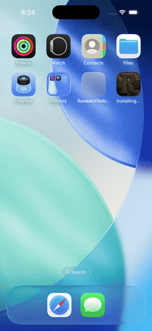
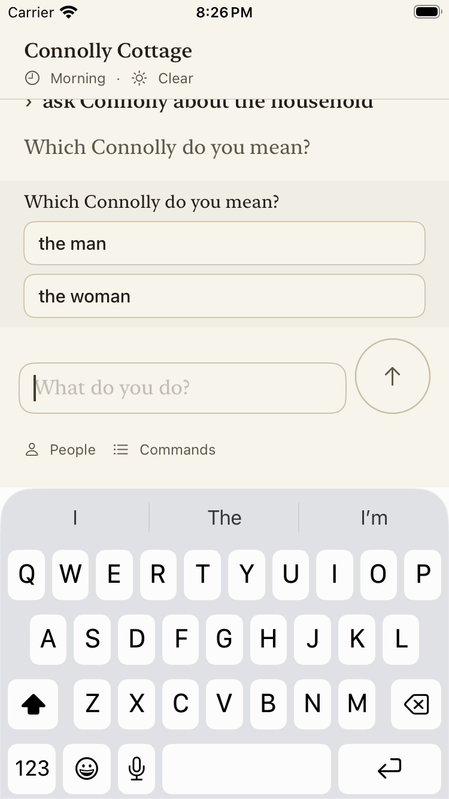
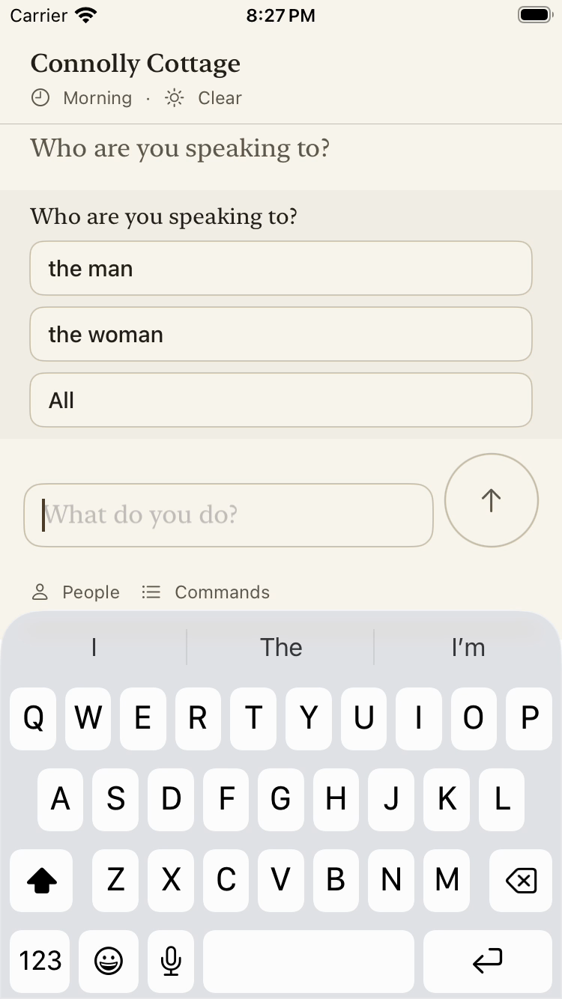

Simulator recordings, not a physical iPhone. Commit
414532f9b954e50aa025822bef4d68a5a75f1857 of branch
feat/2128-short-clarification-labels.
Real Rust engine embedded through the FFI, running on the iOS Simulator, with the
mock Endpoint (--phase3 --phase3-mock). Not live Endpoints and not a physical
device. The live rundale-intent model did not name "Connolly" as the addressee for
"ask Connolly about the household" in two attempts (it asked "Who are you speaking to?"
instead), so the deterministic mock drives this recording.

Same run on the SE simulator. Both question sheets fit above the keyboard.


Not shown: names replacing labels after an introduction (no introduction flow in the mock).